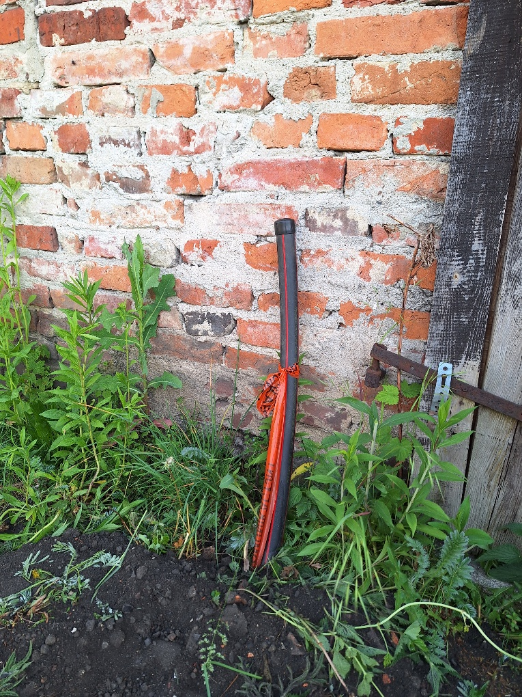

Wieści z parku (odc. 8)
Sezon letni w pełni – treningi wciąż jeszcze odbywają się w Smolcu na Zielonej, a w parku wiele się dzieje...
Powiększenie naszych klubowych smoleckich włości stało się faktem – w dniu 22 maja 2024 r. podpisałem stosowny aneks do umowy użyczenia z Gminą Kąty Wrocławskie i w tej chwili cały obszar działki 481, wraz z dawnym ogródkiem działkowym, jest pod naszą opieką! Przy okazji, zupełnie niespodziewanie, do naszych budynków „przybył” światłowodowy internet – firma GreenLan, rozbudowując sieć na ul. Lipowej, uwzględniła nas w projekcie i bardzo sprawnie położone zostały aż do samego muru jednego z naszych budynków rury, w które – gdy tylko będziemy gotowi korzystać z internetu – zostanie wdmuchany kabel światłowodowy.

źródło: opracowanie własne